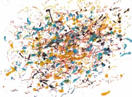

Process
Art
Process
Art  Kinetic
Art
Kinetic
Art  Radical
Art
Radical
Art
 Process
Art
Process
Art  Kinetic
Art
Kinetic
Art  Radical
Art
Radical
Art
The Mechanics of Expression
Tinguely's Meta-matics
|
|

|
|||||||||||||||||||||||||||||||||||||||||
Mechanical ChanceThe Meta-matics (just like Tinguely's other "moving sculptures" of this period) consist of motors, wheels, belts, cogs, and crank-shafts. Their movements are irregular because of the machine's imperfections: jerking, jamming, jittering epicycles of periodic rotations and translations.
In the "Schéma des Dispositifs", Tinguely gives an inventory of his techniques. The construction of chance by means of imperfections is a recurring theme in this text.
|
The Significance of the Meta-matics
"These machines are to a certain type of abstract or nonfigurative art, what the invention of photography was to the realism of the nineteenth century. Just as the academic exasperation of realist painting was stopped by photography, [...] so too will these extraordinary machines [...] now stop very happily this kind of abstract art that has for several years dangerously precipitated a whole generation toward [...] what is the moral plague of the West, the hypertrophy of the ego of the personality." [Yves Klein, 1959.] "One may justifiably compare his meta-matic drawing machines to Marcel Duchamp's ready-mades for richness of meanings, among others a rather devastating critique of the automatic and "informal" art of the 1958 period (. . .). Any dissertation could only fail to exhaust the significance of his creation. The drawing machine adds another question mark after the question: Is art possible? Above all, it is a hallucinating vision of the position of art in the future." [Hultèn 1965, pp. 13/14.]
[Hultén 1975, p. 80.] "Métamatic n° 1 est une machine à faire des dessins, ou plutôt des gribouillages inutiles. [Yves Michaud: Les Apories de la Sculpture] |
Related WorkAnimals
such as donkeys, monkeys, cats or elephants naturally move their tails,
paws and trunks with a noisy regularity which is not unlike the Metamatics.
(Ignace Schretlen has used
the Meta-matic owned by the Amsterdam Stedelijk Museum as a simulation
device in his research on the drawing of monkeys and human infants.) |
Simulating PollockRichard Taylor, Adam Micolich and
David Jonas: "Fractal
expressionism." Physics World 12, 10 (October
1999). |
Assignments:(1) Make a computer simulation of Tinguely's Meta-matics. Also write
a program that makes machine
drawings, and a program that makes muscle
control drawings. Discuss differences and common features between
these programs. |
ReferencesAnon.: Métamatics. Les sculptures qui peignent. Galerie Iris Clert, Paris, 1959. Anon.: "Un Marlo Brando suisse invente une machine à fabriquer l'art abstrait." Jours de France, 27 June 1959. Anon.: "Progrès décisif pour la peinture non figurative: le chef d'œuvre peut se faire à la machine." Le Figaro, 25 July, 1959. Dore Ashton: "Art: Machine-like work." New York Times, 28 January 1960. Edith Auerbach: "Do it yourself." Weltkunst, 15 August 1959. Paul Berg: "Abstract paintings at touch of button." St Louis Post – Dispatch, 6 March 1960. Michel Conil Lacoste: Tinguely. L'Énergétique de l'Insolence. Vol. I. Paris: Éditions de la Différence, 1989. Pierre Descargues: "Tinguely à inventé la machine à faire des tableaux." Tribune de Lausanne, 26 July 1959. Guy Dornand: "Des 'Nouvelles Réalités' à la peinture des robots." Libération, 30 July 1959. Guy Dornand: "En attendant le salon des robots." Le Hors-côte, 5 August 1959. Emily Genauer: "Machine-made abstraction is clever, but is it art?" New York Herald Tribune, 14 February 1960. Karl G. Hultén: Den Ställföreträdande Friheten eller Om Rörelse i Konsten och Tinguelys Metamekanik. (Substitute-Freedom or On Movement in Art and Tinguely's Meta-mechanics.) Special issue of Kasark, oktober 1955. (English translation in: Pontus Hultén, 1975.) K.G. Hultèn: "Jean Tinguely." In: Jean Cassou,
K.G. Hultèn, Sam Hunter and Nicolas Schöffer: K.G. Pontus Hultén: Tinguely. 'Méta'. London: Thames and Hudson, 1975. Pontus Hulten: Jean Tinguely. A Magic Stronger than Death. New York: Abbeville Press, 1987. Alexander Watt: Jean Tinguely — kinetic constructions and
drawing machines. Staempfli Gallery, New York, 1960. |